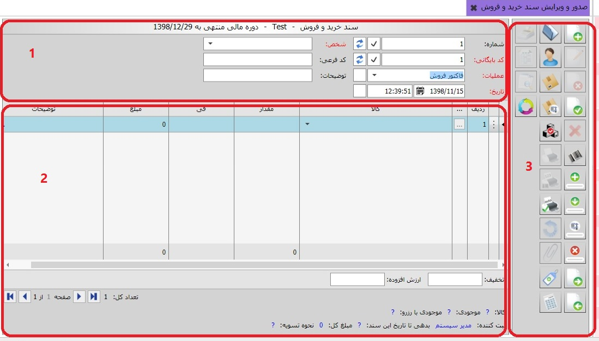
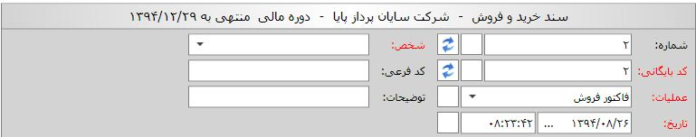
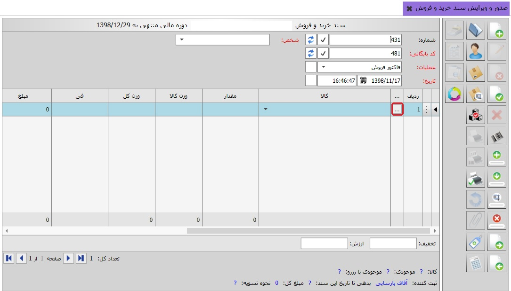
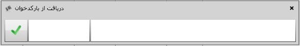
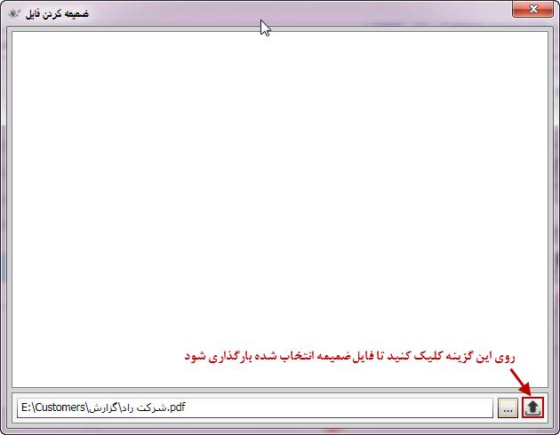
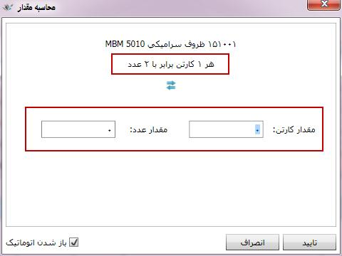
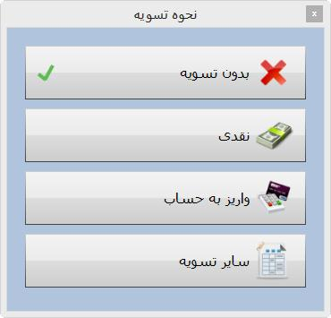
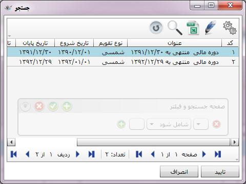
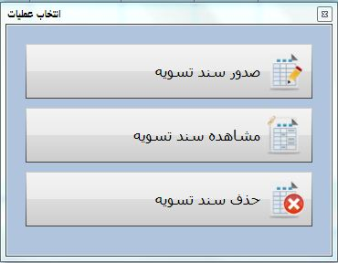

صدور و ویرایش سند خرید و فروش
در این قسمت شما می توانید با استفاده از
عملیات ایجاد شده در صفحه «مدیریت عملیات خرید و فروش» سند صادر کنید، برای
ورود به این صفحه روی منوی «صدور و ویرایش سند خرید و فروش» کلیک کنید، پنجره ی زیر ظاهر می شود:

صفحه «صدور و ویرایش سند خرید و فروش» نیز همانند
صفحه صدور سند سایر سیستم ها به سه قسمت تقسیم شده است:
1: قسمت شماره 1 که در بالای سند خرید و
فروش قرار گرفته است شامل اطلاعاتی است که برای کل سند تنظیم می شود، در
بالای این قسمت اطلاعاتی از قبیل نوع سند، نام شرکت و دوره مالی قرار گرفته است.

اسناد صادر شده از سیستم خرید
و فروش بر حسب عملیات و به ترتیب صدور شماره بندی می شوند. این شماره الزامی نیست به
عبارتی سند خرید و فروش صادر شده
می تواند فاقد شماره باشد، همچنین این شماره می تواند تکراری باشد یعنی دو سند خرید
و فروش می توانند دارای یک
شماره باشند ، البته این شماره قابلیت مرتب شدن دارد که در قسمت بایگانی و مدیریت اسناد
خرید و فروش شرح داده خواهد شد.
کلیه اسنادی که از
سیستم خرید و فروش صادر می شوند به ترتیب صدور کدبندی می شوند این کد الزامی می باشد و هر سند
خرید و فروش باید دارای یک کد بایگانی باشد همچنین این کد قابلیت تکراری بودن و مرتب شدن را ندارد.
با کلیک بر فیلد
عملیات لیست عملیات های موجود ظاهر می شود، با انتخاب عملیات مورد نظر مشخصه های عملیات طی
پارامترهای مورد نیاز
باید تعیین شوند. مثلا در شکل بالا عملیات فاکتور فروش انتخاب شده است و چون این عملیات شامل
مشخصه شخص می باشد
این فیلد در فرم فعال شده و باید مشخص شوند. همچنین با انتخاب عملیات فاکتور فروش در فیلد شخص
لیست اشخاصی که به این عملیات اختصاص یافته نمایش داده می شود.
همچنین فیلد های تاریخ
و ساعت به صورت پیش فرض بر اساس تاریخ و ساعت روز پیشنهاد می شود و قابل تغییر نیز می باشد.
در فیلد های کد فرعی و
توضیحات نیز می توانید اطلاعات لازم را وارد کنید. فیلد توضیحات در این قسمت توضیحات در سطح
سند می باشد.
2: در قسمت شماره 2 ردیف های
سند خرید و فروش را در اختیار دارید. در صورتی که برای عملیات انتخابی در قسمت مدیریت
عملیات پارامتر در سطح ردیف
تعریف کرده باشید آن پارامتر به صورت یک ستون به این فرم اضافه می شود(کنار ستون های
مقدار، فی و مبلغ ..) و شما
باید آن را برای تک تک ردیف های سند مشخص کنید. در صورتی که پارامتر در سطح سند تعریف
کرده باشد آن پارامتر ها در پایین فرم نشان داده می شوند و مقدار آنها باید مشخص شود.

میزان بدهی و چک های
پاس نشده ی شخص انتخاب شده در پایین فرم نمایش داده می شود و علاوه بر آن، با انتخاب هر ردیف
سند خرید و فروش در
پایین فرم اطلاعاتی مربوط به آن ردیف از قبیل نام کالا، مبلغ سند و مبلغ قابل پرداخت، نحوه تسویه
سند، موجودی و موجودی با احتساب این سند نمایش داده می شود.
اگر عملیات انتخابی در قسمت
شماره 1 ، بدون مبنا باشد باید نام کالا را از لیست باز شده انتخاب کنید و مقدار و فی آن
را وارد کنید. البته
اگر کالا در یک لیست قیمت باشد فی آن کالا از آن لیست بازخوانی می شود ولی با این حال قابل
ویرایش نیز می باشد.
چنانچه عملیات انتخابی دارای مبنا باشد با قرار گرفتن روی علامت سه نقطه
 کنار ردیف و فشردن کلید اینتر،
پنجره انتخاب مبنا( شامل تمام اسنادی که بر اساس عملیات مبنا و به نام شخص انتخابی در
قسمت شماره 1 صادر شده اند)
ظاهر می شود و شما می توانید از میان آنها اسناد مبنا را انتخاب کنید و با تایید، اسناد
مبنا داخل فرم صدور سند
خرید و فروش نمایش داده می شوند و در صورت تمایل می توانید تغییراتی در مقدار و فی آنها
ایجاد کنید.(مثلا تعدادی از کالای سند فروش را مرجوع کنید.)
کنار ردیف و فشردن کلید اینتر،
پنجره انتخاب مبنا( شامل تمام اسنادی که بر اساس عملیات مبنا و به نام شخص انتخابی در
قسمت شماره 1 صادر شده اند)
ظاهر می شود و شما می توانید از میان آنها اسناد مبنا را انتخاب کنید و با تایید، اسناد
مبنا داخل فرم صدور سند
خرید و فروش نمایش داده می شوند و در صورت تمایل می توانید تغییراتی در مقدار و فی آنها
ایجاد کنید.(مثلا تعدادی از کالای سند فروش را مرجوع کنید.)
برای مثال اگر عملیات مرجوعی
فروش را انتخاب کنید، گزینه انتخاب مبنا فعال می شود و شما می توانید سند مرجوعی فروش
را بر مبنای فاکتور فروش صادر نمایید. پنجره انتخاب مبنا در شکل زیر نمایش داده شده است:

صفحه انتخاب مبنا دارای
فیلترهایی است که در شکل بالا با کادر قرمز رنگ مشخص شده است. می توانید برای اسناد مبنا
بازه تاریخی مشخص کنید تا
اسناد مبنا را در آن بازه تاریخ مشاهده نمایید. با فعال کردن گزینه « انتقال پارامترهای
سند» می توانید پارامترهای
سند مبنا را به سند خرید و فروش جاری منتقل کنید. اگر ردیف یا ردیف هایی از اسناد مبنا را
توسط گزینه ابطال ردیف
از پایین صفحه ابطال کرده اید، با استفاده از گزینه نمایش ردیف های ابطال شده، می توانید آن
ها را نیز مشاهده نمایید.
همچنین در شکل بالا دو گزینه شامل نام شخص و نام انبار وجود دارد که در واقع مقادیر
پارامترهای سند خرید و فروش جاری
است که تعیین شده است. در صورت فعال بودن هر یک از پارامترها در پنجره انتخاب مبنا،
ردیف های اسناد مبنا بر اساس مقدار آن پارامتر فیلتر خواهند شد.
3: نوار عمودی سمت راست فرم
صدور سندخرید و فروش (قسمت شماره 3) شامل ابزارهایی است که به شرح تک تک آنها می
پردازیم:
 ایجاد سند جدید (F8):
برای ایجاد سند جدید می توانید از این آیکن استفاده کنید.
ایجاد سند جدید (F8):
برای ایجاد سند جدید می توانید از این آیکن استفاده کنید.
 ویرایش این سند (F2):
این آیکن هنگامی که سند در
حالت ثبت شده قرار دارد فعال می باشد و با کلیک بر روی آن، سند از وضعیت ثبت شده خارج می
شود و می توان آن را ویرایش کرد.
ویرایش این سند (F2):
این آیکن هنگامی که سند در
حالت ثبت شده قرار دارد فعال می باشد و با کلیک بر روی آن، سند از وضعیت ثبت شده خارج می
شود و می توان آن را ویرایش کرد.
 حذف این سند (F9):
این آیکن برای حذف سند ثبت شده به کار می رود.
حذف این سند (F9):
این آیکن برای حذف سند ثبت شده به کار می رود.
 ثبت سند (Ctrl+Enter):
پس از اتمام ثبت اطلاعات سند یا اتمام ویرایش آن با کلیک بر روی این آیکن سند به حالت ثبت شده در می آید.
ثبت سند (Ctrl+Enter):
پس از اتمام ثبت اطلاعات سند یا اتمام ویرایش آن با کلیک بر روی این آیکن سند به حالت ثبت شده در می آید.
 انصراف از ویرایش (Ctrl+F2):
اگر در حین ویرایش یک سند از ویرایش منصرف شدید می توانید از این آیکن استفاده کنید.
انصراف از ویرایش (Ctrl+F2):
اگر در حین ویرایش یک سند از ویرایش منصرف شدید می توانید از این آیکن استفاده کنید.
 دریافت از بارکد خوان (Ctrl + B) :
با کلیک بر روی این گزینه پنجره دریافت
از بارکدخوان باز می شود که می توانید ردیف های سند را با استفاده از بارکد
ریدر پر کنید. شکل زیر این پنجره را نمایش می دهد :
دریافت از بارکد خوان (Ctrl + B) :
با کلیک بر روی این گزینه پنجره دریافت
از بارکدخوان باز می شود که می توانید ردیف های سند را با استفاده از بارکد
ریدر پر کنید. شکل زیر این پنجره را نمایش می دهد :

در این پنجره در کادر سمت راست بارکد
کالا و در کادر سمت چپ تعداد کالا نمایش داده می شود. بعد وارد کردن کد فنی
کالا و کلیک بر روی کلید Ctrl + Enter سندثبت می شود.
 ایجاد ردیف (Ctrl+Plus):
برای ایجاد یک ردیف در سند در حال ثبت یا ویرایش بکار می رود.
ایجاد ردیف (Ctrl+Plus):
برای ایجاد یک ردیف در سند در حال ثبت یا ویرایش بکار می رود.
 کپی ردیف (Ctrl+Shift+Plus):
چنانچه تمایل داشتید یک ردیف سند را عینا
در ردیف بعدی کپی کنید از این گزینه استفاده کنید، اگر ردیف مورد نظر را
انتخاب کنید و روی این آیکن کلیک کنید یک کپی در ردیف زیرین آن ایجاد می شود.
کپی ردیف (Ctrl+Shift+Plus):
چنانچه تمایل داشتید یک ردیف سند را عینا
در ردیف بعدی کپی کنید از این گزینه استفاده کنید، اگر ردیف مورد نظر را
انتخاب کنید و روی این آیکن کلیک کنید یک کپی در ردیف زیرین آن ایجاد می شود.
 حذف ردیف (Ctrl+Minus):
پیش از ثبت سند یا در هنگام ویرایش
سند اگر تمایل داشتید یک ردیف حذف شود آن ردیف را انتخاب کنید و روی این آیکن
کلیک کنید.
حذف ردیف (Ctrl+Minus):
پیش از ثبت سند یا در هنگام ویرایش
سند اگر تمایل داشتید یک ردیف حذف شود آن ردیف را انتخاب کنید و روی این آیکن
کلیک کنید.
 مشاهده سند بعدی (F12):
با این آیکن شما قادر هستید اگر بعد از سند جاری سند دیگری باشد سند بعدی را مشاهده کنید.
مشاهده سند بعدی (F12):
با این آیکن شما قادر هستید اگر بعد از سند جاری سند دیگری باشد سند بعدی را مشاهده کنید.
 مشاهده سند قبلی (F11):
با کلیک بر روی این آیکن شما یک سند قبل از سند جاری را مشاهده می کنید.
مشاهده سند قبلی (F11):
با کلیک بر روی این آیکن شما یک سند قبل از سند جاری را مشاهده می کنید.
 باز کردن (F3):
با این آیکن شما می توانید لیست
کل اسناد صادر شده از سیستم خرید و فروش را در پنجره ای که ظاهر می شود مشاهده کنید.
باز کردن (F3):
با این آیکن شما می توانید لیست
کل اسناد صادر شده از سیستم خرید و فروش را در پنجره ای که ظاهر می شود مشاهده کنید.
 چاپ این سند (Ctrl+P):
شما با این آیکن قادر خواهید بود
از یک سند ثبت شده گزارش بگیرید، چنانچه روی این آیکن کلیک کنید پنجره ای نمایان می
شود و شما می توانید گزارش مورد نظر
خود را از گزارش های موجود انتخاب کرده و یا حتی گزارش دلخواه خود را طراحی کنید
و سپس پرینت بگیرید.
چاپ این سند (Ctrl+P):
شما با این آیکن قادر خواهید بود
از یک سند ثبت شده گزارش بگیرید، چنانچه روی این آیکن کلیک کنید پنجره ای نمایان می
شود و شما می توانید گزارش مورد نظر
خود را از گزارش های موجود انتخاب کرده و یا حتی گزارش دلخواه خود را طراحی کنید
و سپس پرینت بگیرید.
 چاپ تکرار شونده (Ctrl + T):
شما با این آیکن قادر خواهید بود به
تعداد مقدار یک سند ثبت شده گزارش بگیرید، چنانچه روی این آیکن کلیک کنید پنجره
ای نمایان می شود و شما می توانید
انتخاب کنید به تعداد موجود در ستون مقدار از سند پرینت گرفته شود و یا از یک
مقدار مشخص به تکرار پرینت گرفته شود. با کلیک بر روی این گزینه منوی زیر باز می شود :
چاپ تکرار شونده (Ctrl + T):
شما با این آیکن قادر خواهید بود به
تعداد مقدار یک سند ثبت شده گزارش بگیرید، چنانچه روی این آیکن کلیک کنید پنجره
ای نمایان می شود و شما می توانید
انتخاب کنید به تعداد موجود در ستون مقدار از سند پرینت گرفته شود و یا از یک
مقدار مشخص به تکرار پرینت گرفته شود. با کلیک بر روی این گزینه منوی زیر باز می شود :

 چاپ بعد از ثبت :
در صورتی که در این قسمت تنظیمات پیش
فرض پرینت را انجام داده باشید هر بار که سندی را ثبت می کنید به صورت اتوماتیک
از سند مورد نظر پرینت گرفته می شود. تنظیمات این قسمت در شکل زیر نمایش داده شده است :
چاپ بعد از ثبت :
در صورتی که در این قسمت تنظیمات پیش
فرض پرینت را انجام داده باشید هر بار که سندی را ثبت می کنید به صورت اتوماتیک
از سند مورد نظر پرینت گرفته می شود. تنظیمات این قسمت در شکل زیر نمایش داده شده است :

در این قسمت شما می توانید چند نوع گزارش و چند نوع پرینتر را به صورت پیش فرض قرار دهید.
 مشاهده کاردکس کالا (F6):
توسط این گزینه می توانید کاردکس کالای انتخاب شده در هر ردیف را مشاهده نمایید.
مشاهده کاردکس کالا (F6):
توسط این گزینه می توانید کاردکس کالای انتخاب شده در هر ردیف را مشاهده نمایید.
 مشاهده مبنا:
با کلیک بر این آیکن پنجره مشاهده مبنا را ملاحظه خواهید کرد که شامل چهار گزینه می باشد:
مشاهده مبنا:
با کلیک بر این آیکن پنجره مشاهده مبنا را ملاحظه خواهید کرد که شامل چهار گزینه می باشد:
1. ردیف های مبنای این سند: این گزینه
ردیف های سندی را نشان می دهد که سند جاری بر مبنای آن صادر شده است.
2. ردیف های بر مبنای این سند:
ردیف هایی را نشان می دهد که بر مبنای ردیف های سند جاری ثبت شده اند.
3. ردیف های این سند: ردیف های سند جاری را نمایش می دهد.
4. ردیف های پایه این سند: اگر عملیات
تعریفی شما بر اساس زنجیره ای از مبناها ایجاد شده باشد به این معنا که هر یک
از عملیات بر مبنای عملیات دیگری
صادر شود، با استفاده از این گزینه می توانید عملیات پایه این زنجیره مبنا ها را
مشاهده کنید. برای مثال اگر عملیات
فروش بر مبنای پیش فاکتور و عملیات مرجوعی فروش بر مبنای فاکتور فروش ثبت شود، با
انتخاب این گزینه می توانید ردیف های سند پیش فاکتور را که سند پایه می باشد را مشاهده کنید.
در شکل زیر پنجره مشاهده
مبنا نشان داده شده است.(در شکل گزینه ردیف های مبنای این سند در حالت انتخاب است.)

 ضمیمه کردن فایل ها :
ا: گاهی لازم است فایل ها یا مستندات
مرتبط با سند ثبت شده همراه با آن بایگانی شود. با استفاده از این گزینه که بعد
از ثبت سند فعال می شود می توانید انواع فایل های مربوط به سند مورد نظرتان را به آن ضمیمه کنید.
ضمیمه کردن فایل ها :
ا: گاهی لازم است فایل ها یا مستندات
مرتبط با سند ثبت شده همراه با آن بایگانی شود. با استفاده از این گزینه که بعد
از ثبت سند فعال می شود می توانید انواع فایل های مربوط به سند مورد نظرتان را به آن ضمیمه کنید.
برای ضمیمه کردن فایل ها مراحل را طبق شکل های زیر دنبال کنید:



در شکل قبل مشاهده می کنید که
مسیر فایل انتخاب شده در پایین صفحه نمایش داده می شود، پس از زدن گزینه ، فایل ضمیمه
در صفحه به نمایش درخواهد آمد.
به همین ترتیب می توانید انواع مختلف فایل را به تعداد دلخواه به سند مورد نظرتان
ضمیمه کنید، با این کار صفحه ضمیمه به شکل زیر نمایش داده خواهد شد:

فایل های ضمیمه شده در قالب مشخصی
شامل نام فایل و نوع آن نمایش داده می شوند. اگر نشانگر ماوس را روی هر یک از فایل
ها قرار دهید، سه گزینه روی هر یک فعال می گردد که به شرح زیر می باشند:

برای اجرای فایل ضمیمه شده از گزینه «اجرا» استفاده کنید.
با استفاده از گزینه «ذخیره» می توانید فایل ضمیمه را در محل مورد نظرتان ذخیره نمایید.
برای حذف فایل انتخاب شده از لیست فایل های ضمیمه از گزینه «حذف» استفاده می شود.
 لازم است بدانید برای استفاده
از گزینه «ضمیمه کردن فایل ها» باید ابتدا مسیر ضمیمه ها را در پنجره «مدیریت سرور»
تعیین کنید که شرح کامل آن را می توانید در فایل «قابلیت های عمومی نرم افزار» مشاهده نمایید.
لازم است بدانید برای استفاده
از گزینه «ضمیمه کردن فایل ها» باید ابتدا مسیر ضمیمه ها را در پنجره «مدیریت سرور»
تعیین کنید که شرح کامل آن را می توانید در فایل «قابلیت های عمومی نرم افزار» مشاهده نمایید.
 بررسی نگارش:
قبل از ثبت سند می توانید با این آیکن از پر کردن تمام فیلد های سند اطمینان حاصل کنید.
بررسی نگارش:
قبل از ثبت سند می توانید با این آیکن از پر کردن تمام فیلد های سند اطمینان حاصل کنید.
 محاسبه مقدار (F7):
در صورتی که برای کالای
انتخاب شده واحد فرعی تعریف کرده باشید، با انتخاب نام آن کالا و زدن گزینه محاسبه مقدار،
پنجره ای باز می شود که
می توانید انتخاب کنید مقدار کالا را بر اساس واحد فرعی وارد می کنید یا واحد اصلی. در آن
صورت طبق نسبت موجود بین
واحد اصلی و فرعی، مقدار کالا به واحد اصلی در فرم صدور سند نمایش داده می شود. در واقع این
گزینه به شما این امکان
را می دهد که برای راحتی کار شما مقدار را به واحد فرعی وارد کنید و بتوانید با واحد اصلی
ثبت کنید.
محاسبه مقدار (F7):
در صورتی که برای کالای
انتخاب شده واحد فرعی تعریف کرده باشید، با انتخاب نام آن کالا و زدن گزینه محاسبه مقدار،
پنجره ای باز می شود که
می توانید انتخاب کنید مقدار کالا را بر اساس واحد فرعی وارد می کنید یا واحد اصلی. در آن
صورت طبق نسبت موجود بین
واحد اصلی و فرعی، مقدار کالا به واحد اصلی در فرم صدور سند نمایش داده می شود. در واقع این
گزینه به شما این امکان
را می دهد که برای راحتی کار شما مقدار را به واحد فرعی وارد کنید و بتوانید با واحد اصلی
ثبت کنید.

در شکل بالا مشاهده می کنید
که برای کالای انتخاب شده واحد اصلی و فرعی و نسبت بین آن ها نمایش داده شده است و شما
می توانید مقدار کالا را یا با
واحد اصلی و یا با واحد فرعی وارد کنید که نهایتا با واحد اصلی به شما نمایش داده می
شود. با زدن گزینه
نیز می توانید نسبت میان واحد
اصلی و فرعی را معکوس کنید که در آن صورت جای فیلد مقدار برای واحد اصلی و فرعی نیز
تغییر می کند.
 محاسبه مقادیر (F5):
اگر کلید Ctrl را نگه دارید و همزمان
این آیکن را کلیک کنید تمام فرمول های پارامترهای موجود در سند اعم از
پارامترهای در سطح ردیف و سطح
سند محاسبه می شوند ، چنانچه یک ردیف از سند خزانه را انتخاب کنید و روی این آیکن کلیک
کنید اگر پارامتر مقدار و
سایر پارامترهای در سطح ردیف که برای عملیات ایجاد کردیم دارای فرمول باشند مقادیر این
فرمول ها محاسبه می شود(اگر چند ردیف را با نگه داشتن کلید Ctrl انتخاب کنید می توانید محاسبه
فرمول را برای آن چند
ردیف انجام دهید.)
محاسبه مقادیر (F5):
اگر کلید Ctrl را نگه دارید و همزمان
این آیکن را کلیک کنید تمام فرمول های پارامترهای موجود در سند اعم از
پارامترهای در سطح ردیف و سطح
سند محاسبه می شوند ، چنانچه یک ردیف از سند خزانه را انتخاب کنید و روی این آیکن کلیک
کنید اگر پارامتر مقدار و
سایر پارامترهای در سطح ردیف که برای عملیات ایجاد کردیم دارای فرمول باشند مقادیر این
فرمول ها محاسبه می شود(اگر چند ردیف را با نگه داشتن کلید Ctrl انتخاب کنید می توانید محاسبه
فرمول را برای آن چند
ردیف انجام دهید.)
 قسمت تنظیمات خرید و
فروش این امکان را می دهد که سیستم را به گونه ای تنظیم کنید که مقادیر فرمول ها به صورت
اتوماتیک قبل از ثبت سند محاسبه شود.
قسمت تنظیمات خرید و
فروش این امکان را می دهد که سیستم را به گونه ای تنظیم کنید که مقادیر فرمول ها به صورت
اتوماتیک قبل از ثبت سند محاسبه شود.
 قیمت گذاری (F6):
این آیکن قیمت کالا را از لیست قیمت بازخوانی می کند.(با نگه داشتن کلید Ctrl برای کل ردیف ها
اعمال می شود.)
قیمت گذاری (F6):
این آیکن قیمت کالا را از لیست قیمت بازخوانی می کند.(با نگه داشتن کلید Ctrl برای کل ردیف ها
اعمال می شود.)
 تسویه :
این گزینه پس از ثبت سند فعال می گردد.
با زدن این گزینه علاوه بر اینکه می توانید نحوه تسویه کنونی سند را مشاهده
کنید، بلکه می توانید نحوه
تسویه سند را تغییر دهید. با زدن گزینه تسویه پنجره زیر نمایش داده می شود:
تسویه :
این گزینه پس از ثبت سند فعال می گردد.
با زدن این گزینه علاوه بر اینکه می توانید نحوه تسویه کنونی سند را مشاهده
کنید، بلکه می توانید نحوه
تسویه سند را تغییر دهید. با زدن گزینه تسویه پنجره زیر نمایش داده می شود:

در شکل بالا نحوه تسویه سند بدون
تسویه می باشد. حال می توانید نحوه تسویه سند را تغییر دهید، با تغییر نحوه تسویه
سند حسابداری قبلی به صورت
اتوماتیک حذف و سند حسابداری جدید جایگزین آن می شود. اگر گزینه سایر تسویه را انتخاب
کنید، پس از ثبت سند و صدور
سند حسابداری مربوط به سند خرید و فروش، سند تسویه عملیات خرید و فروش از سیستم خزانه
داری باز می شود و شما می توانید سند تسویه ( برای مثال فروش) را از سیستم خرید و فروش صادر کنید.
 نمایش سند تسویه:
اگر نحوه تسویه سند خرید و فروش ثبت شده
سایر تسویه باشد، شما می توانید از طریق این گزینه سند تسویه آن را مشاهده
نمایید.
نمایش سند تسویه:
اگر نحوه تسویه سند خرید و فروش ثبت شده
سایر تسویه باشد، شما می توانید از طریق این گزینه سند تسویه آن را مشاهده
نمایید.
 انتخاب دوره مالی (F10):
با کلیک بر روی این آیکن پنجره ای
ظاهر می شود که لیست دوره های مالی تعریف شده در سیستم را شامل می شود و شما می
توانید دوره مالی مورد نظر خود را انتخاب کنید.
انتخاب دوره مالی (F10):
با کلیک بر روی این آیکن پنجره ای
ظاهر می شود که لیست دوره های مالی تعریف شده در سیستم را شامل می شود و شما می
توانید دوره مالی مورد نظر خود را انتخاب کنید.

 سند تسویه (Ctrl + k) :
با کلیک بر روی این گزینه منوی زیر باز می شود :
سند تسویه (Ctrl + k) :
با کلیک بر روی این گزینه منوی زیر باز می شود :

 صدور سند تسویه :
با کلیک بر روی این گزینه می توانید برای سند خرید و فروش ، سند تسویه صادر کنید .
صدور سند تسویه :
با کلیک بر روی این گزینه می توانید برای سند خرید و فروش ، سند تسویه صادر کنید .
مشاهده سند تسویه :
اگر نحوه تسویه سند خرید و فروش ثبت
شده سایر تسویه باشد، شما می توانید از طریق این گزینه سند تسویه آن را مشاهده
نمایید.
 حذف سند تسویه :
با کلیک بر روی این گزینه می توانید سند تسویه مربوطسند خرید و فروش را حذف کنید.
حذف سند تسویه :
با کلیک بر روی این گزینه می توانید سند تسویه مربوطسند خرید و فروش را حذف کنید.
 سند مالی (Ctrl + J) :
با کلیک بر روی این گزینه منوی زیر باز می شود :
سند مالی (Ctrl + J) :
با کلیک بر روی این گزینه منوی زیر باز می شود :

 محاسبه سند حسابداری :
در صورتی که در سیستم حسابداری به
شما اجازه صدور سند حسابداری داده شده باشد این گزینه در فرم فعال می شود و با
کلیک بر روی این آیکن می توانید برای
سند خرید و فروشی که سند حسابداری ندارد سند حسابداری صادر کنید. البته بعد از
ثبت سند خرید و فروش به صورت
اتوماتیک فرم صدور سند حسابداری نمایان می شود که تمام عوامل آن طبق الگوهایی که در
سیستم حسابداری تعریف شده مشخص شده
است و بعد از بررسی می توانید سند حسابداری را صادر کنید. چنانچه مایل بودید صدور
سند حسابداری را از حالت
اتوماتیک خارج کنید می توانید از قسمت تنظیمات خرید و فروش این کار را انجام دهید.
محاسبه سند حسابداری :
در صورتی که در سیستم حسابداری به
شما اجازه صدور سند حسابداری داده شده باشد این گزینه در فرم فعال می شود و با
کلیک بر روی این آیکن می توانید برای
سند خرید و فروشی که سند حسابداری ندارد سند حسابداری صادر کنید. البته بعد از
ثبت سند خرید و فروش به صورت
اتوماتیک فرم صدور سند حسابداری نمایان می شود که تمام عوامل آن طبق الگوهایی که در
سیستم حسابداری تعریف شده مشخص شده
است و بعد از بررسی می توانید سند حسابداری را صادر کنید. چنانچه مایل بودید صدور
سند حسابداری را از حالت
اتوماتیک خارج کنید می توانید از قسمت تنظیمات خرید و فروش این کار را انجام دهید.
مشاهده سند حسابداری :
با این آیکن شما می توانید
سند حسابداری صادر شده برای سند خرید و فروش را مشاهده کنید. چنانچه برای سند خزانه
انتخاب شده سند حسابداری صادر
نشده باشد سیستم پیغام خطا به شما می دهد به این صورت که هیچ سندی برای مشاهده وجود
ندارد.
حذف سند حسابداری :
اگر برای یک سند خرید و فروش،
سند حسابداری صادر کرده باشید و هنوز سند حسابداری در سیستم حسابداری تایید نشده باشد
با این آیکن می توانید سند حسابداری آن را حذف کنید.